Publications
* は責任著者 / Open Access はオープンアクセス
Graphical Abstract・解説:
査読付論文 Peer-reviewed papers
該当する論文がありません。検索語や絞り込みを変えてみてください。
Preprint
- W. Imanaka, K. Yamashita,*
“Reassignment of the Near-Infrared Absorption of Dioxidized Rare-Earth Porphyrin Double-Decker Complexes: Identification of a Nearly Dark Lowest Excited State”
ChemRxiv, 2026 (2026年10月23日公開).
Preprint(査読中) ChemRxiv
2026
- M. Fukada, K. Furutani, K. Yamashita,*
“Encapsulation, isomer discrimination, and selective capture of substituted pyrazines by an adaptable cofacial zinc porphyrin dimer”
Dalton Trans., 2026, 55, 12856−12864.
DOI ChemRxiv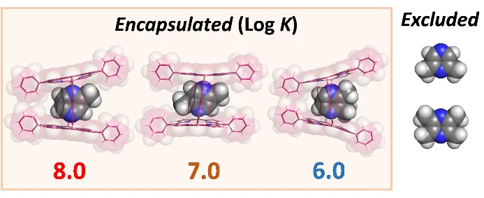
- R. Nishimura, S. Hecht, S. Saito, K. Yamashita,*
“Multi-State Photoswitching in Thienoquinoid-Based Fluorescent Trithiophenes”
Chem. Eur. J., 2026, 32, e71423.
Open Access DOI ChemRxiv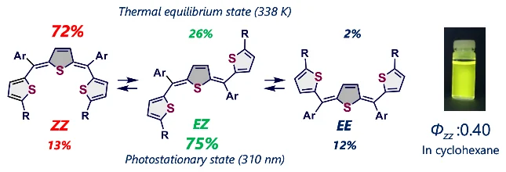
- H. Sugimura, W. Imanaka, K. Yamashita,*
“Lanthanum β-Tetracyanoporphyrin Double-Decker Complexes: Four-Electron Reduction and Slow Ligand Rotation”
Chem. Eur. J., 2026, 32, e70894.
DOI ChemRxiv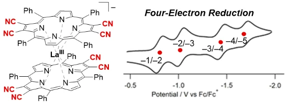
2025
- S. Islam, M. J. Mia, D. Tauchi, M. Hasegawa, M. Fusè, G. Mazzeo, G. Longhi,* S. Abbate, K. Yamashita, K. Sugiura*
“Syntheses and Characterization of (R)- and (S)-1,1’-Bi-2-naphtholato Coordinated Gallium(III) Porphyrins and Their Chiroptical Properties”
Eur. J. Inorg. Chem., 2025, 28, e202500434.
Open Access DOI - R. Nishimura, K. Yamashita,*
“Effect of Chalcogen Interaction on the Structure of Methine-Bridged Trichalcogenophenes”
Chem. Eur. J., 2025, 31, e202501123.
Hot PaperCover Feature Open Access DOI ChemRxiv
- M. Isoda, H. Sugimura, Y. Honda, K. Yamashita,*
“Tuning Antiaromaticity Through Meso-Substituent Orientation in Core-Modified Isophlorins”
Asian J. Org. Chem., 2025, 14, e00372.
Invited Paper Open Access DOI ChemRxiv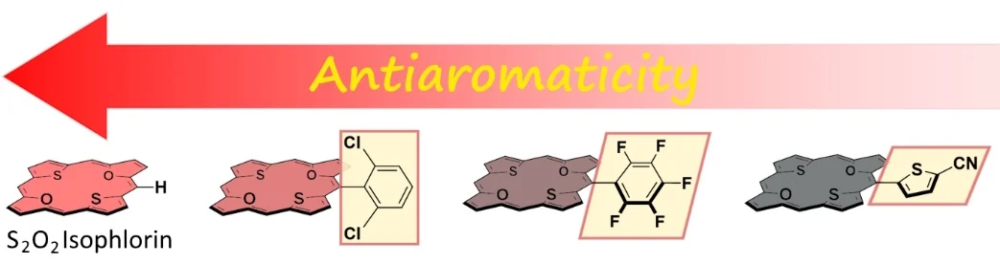
- H. Sugimura, K. Nakajima, K. Yamashita,*
“Synthesis and Characterization of an Air-Stable Tin (IV) β-Tetracyanoisophlorin Complex: Enhanced Antiaromaticity through Metal Complexation”
Asian J. Org. Chem., 2025, 14, e202400550.
Invited Paper Open Access DOI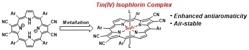
2024
- Y. Hirai, Y. Kawazoe, K. Yamashita,*
“Stable Antiaromatic [16] Triphyrin (2.1.1) with Core Modification: Synthesis Using a 16π Electrocyclic Reaction”
Chem. Eur. J., 2024, 30, e202403097.
Front Cover Open Access DOI ChemRxiv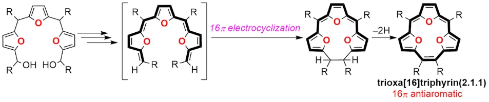
2023
- K. Yamashita,* D. Hirano, K. Sugiura*
“Synthesis and Characterization of Quinone Compounds Derived from Doubly- and Triply-Linked Diporphyrins and Tuning of Their Absorption Properties”
Chem. Eur. J., 2023, 29, e202302637.
Hot PaperCover Feature DOI ChemRxiv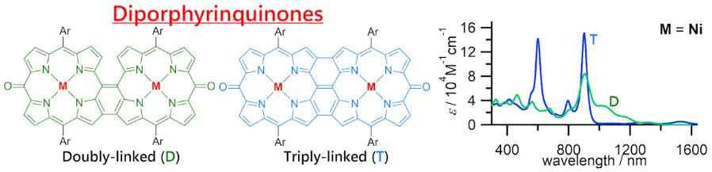
- K. Yamashita,* S. Takeuchi, K. Sugiura*
“Structurally well-defined conjugated meso-aminoporphyrin oligomers analogous to polyanilines”
Chem. Sci., 2023, 14, 2735−2744.
Open Access DOI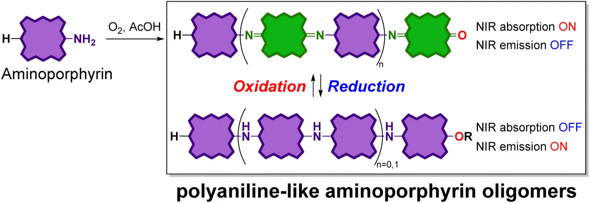
2022
- H. Sugimura, K. Nakajima, K. Yamashita,* T. Ogawa
“20π antiaromatic isophlorins without metallation or core modification”
Eur. J. Org. Chem., 2022, e202200747.
Very Important Paper (VIP)Front Cover DOI ChemRxiv プレスリリース Chem-Station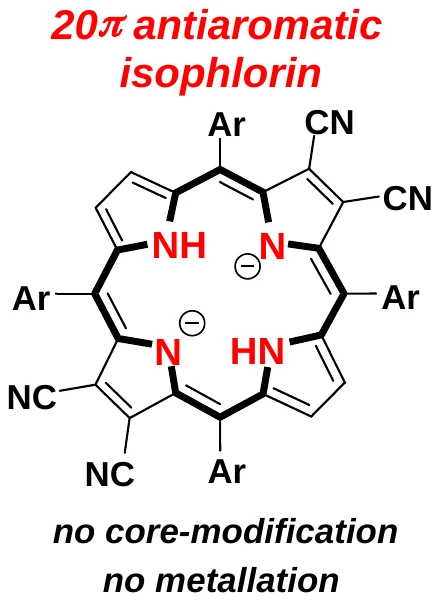
2021
- K. Yamashita,* K. Furutani, T. Ogawa
“Outstanding Enhancement in the Axial Coordination Ability of the Highly Rigid Cofacial Cyclic Metalloporphyrin Dimer”
Asian J. Org. Chem., 2021, 10, 1192−1197.
DOI ChemRxiv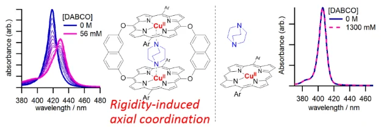
- K. Matsudaira, Y. Mimura, J. Hotei, S. Yagi, K. Yamashita, M. Fujiki, Y. Imai*
“Magnetic Circularly Polarized Luminescence from PtIIOEP and F2-ppyPtII(acac) under North-up and South-up Faraday Geometries”
Chem. Asian J., 2021, 16, 926−930.
Front Cover DOI プレスリリース - A. H. Wibowo,* A. Pradifta, A. Masykur, K. Yamashita, Y. Tani, A. Y. Akbar, T. Ogawa
“Synthesis of Fe(II)/Co(II)-Fused Triphenyl Porphyrin Dimer as Candidate for Oxygen Reduction Reaction Catalyst”
Indones. J. Chem., 2021, 21, 871−881.
Open Access DOI
2020
- K. Yamashita,* D. Hirano, K. Fujimaki, K. Sugiura*
“Synthesis of Porphyrinquinone and Doubly-Fused Diporphyrin Quinone Through Oxidation of Diarylporphyrins Using a Hypervalent Iodine Compound”
Chem. Asian J., 2020, 15, 3037−3043.
DOI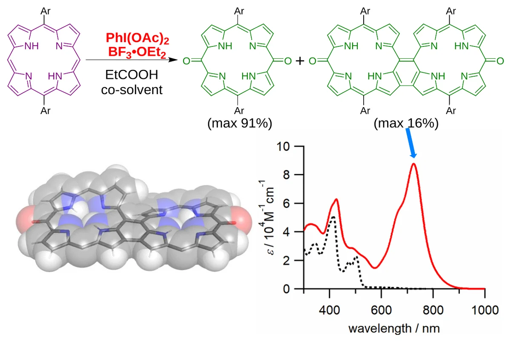
- K. Yamashita,* D. Hirano, K. Sugiura*
“Metal Complexes of 5, 15-Porphyrinquinones: Systematic Study of Crystal Structure, Electronic Structure, and Lewis Acidity”
Eur. J. Inorg. Chem., 2020, 3507−3516.
DOI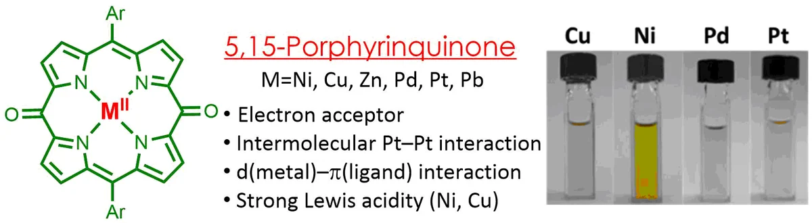
- K. Yamashita,* K. Nakajima, Y. Honda, T. Ogawa*
“Facile redox-induced aromatic-antiaromatic interconversion of a β-tetracyano-21,23-dithiaporphyrin under ambient conditions”
Chem. Eur. J., 2020, 26, 3633−3640.
DOI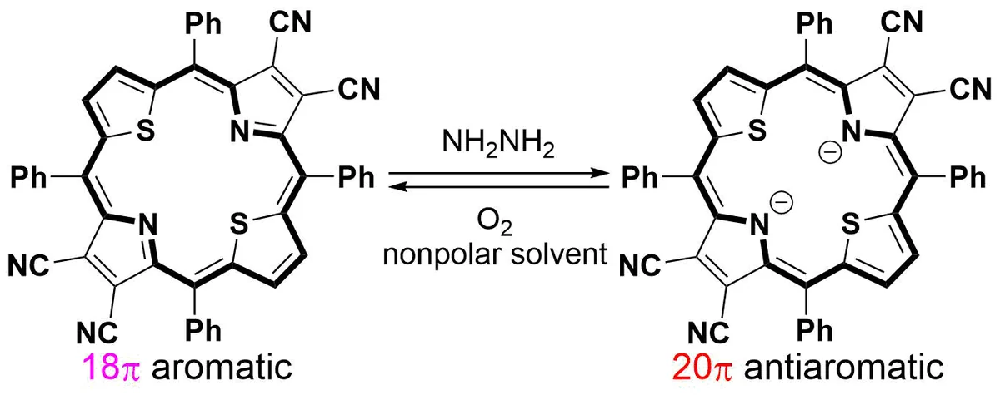
- Y. Yamazaki, K. Yamashita, Y. Tani, T. Aoyama, T. Ogawa*
“Structure determination and negative differential resistance of tetraarylporphyrin/polyoxometalate 2: 1 complexes”
J. Mater. Chem. C, 2020, 8, 14423−14430.
DOI - K. Yamashita,* N. Kuramochi, H. Pham Qui Van, K. Furutani, T. Ogawa, K. Sugiura*
“Efficient Synthesis of Arylenedioxy-Bridged Porphyrin Dimers through Catalyst-Free Nucleophilic Aromatic Substitution”
ChemPlusChem, 2020, 85, 217−226.
DOI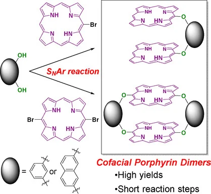
2019
- K. Yamashita,* K. Sugiura*
“Photochemical Reaction of Anthracene with Dioxygen Catalyzed by Platinum(II) Porphyrin”
Tetrahedron Lett., 2019, 60, 151081.
DOI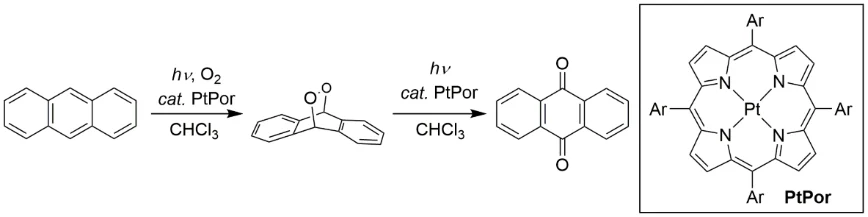
- S. Lee, K. Yamashita, N. Sakata, Y. Hirao, K. Ogawa, T. Ogawa*
“Stable Singlet Biradicals of Rare-Earth-Fused Diporphyrin-Triple-Decker Complexes with Low Energy Gaps and Multi-Redox States”
Chem. Eur. J., 2019, 25, 3240−3243.
DOI - K. Yamashita, K. Nishimoto, K. Sugiura*
“Unexpected Oxidation Reaction of 1,6-Diarylpyrene with Cu(BF4)2⋅nH2O Affording Pyrenequinones”
ChemistrySelect, 2019, 4, 279−284.
DOI
2018
- K. Yamashita,* K. Kataoka, H. Pham Qui Van, T. Ogawa, K. Sugiura*
“Versatile and Catalyst-Free Methods for the Introduction of Group-16 Elements at the meso-Positions of Diarylporphyrins by the Aromatic Nucleophilic Substitution Reactions”
Asian J. Org. Chem., 2018, 7, 2468−2478.
DOI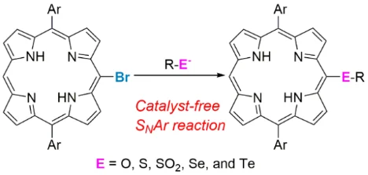
- K. Yamashita,* T. Yamanaka, N. Sakata, T. Ogawa,*
“Redox-Driven Symmetry Change for Terbium (III) Bis(porphyrinato) Double-Decker Complexes by the Azimuthal Rotation of the Porphyrin Macrocycles”
Chem. Asian J., 2018, 13, 1692−1698.
Front Cover DOI ChemistryViews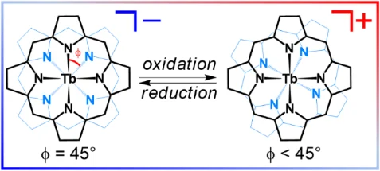
- R. Fujii, M. A. Hossain, H. Akimono, K. Hirabayashi, T. Shimizu, K. Akiyama, K. Goto, H. Nishikawa, K. Yamashita, K. Sugiura*
“Synthesis of Tetra (3-thienyl)biphenoquinone and its Charge Transfer Complex with Perylene”
Asian J. Org. Chem., 2018, 7, 171−178.
DOI
2017
- M. A. Hossain, K. Yamashita, K. Hirabayashi, T. Shimizu, K. Goto, K. Sugiura*
“Thiophene-Fused Dinaphthopentaphenes: Versatile Applications of 1,2-Bis(pyren-2-yl) aromatics in the Synthesis of π-Expanded Molecules”
ChemistrySelect, 2017, 2, 4343−4348.
DOI - A. Setiadi, H. Fujii, S. Kasai, K. Yamashita, T. Ogawa, T. Ikuta, Y. Kanai, K. Matsumoto, Y. Kuwahara, M. Akai-Kasaya*
“Room-temperature discrete-charge-fluctuation dynamics of a single molecule adsorbed on a carbon nanotube”
Nanoscale, 2017, 9, 10674−10683.
DOI
2016
- K. Yamashita,* K. Kataoka, S. Takeuchi, K. Sugiura*
“Metal-Free Synthesis of meso-Aminoporphyrins through Reduction of meso-Azidoporphyrins Generated In Situ by Nucleophilic Substitution Reactions of meso-Bromoporphyrins”
J. Org. Chem., 2016, 81, 11176−11184.
DOI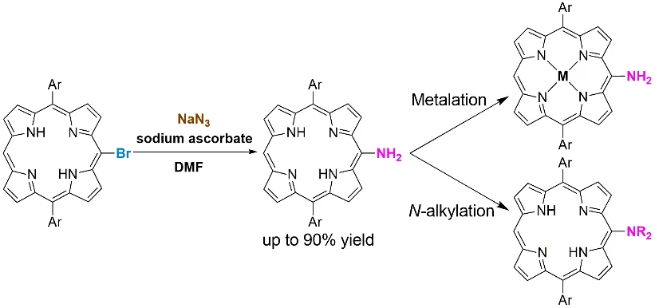
- K. Yamashita, N. Sakata, T. Ogawa*
“Systematic Structural Elucidation for the Protonated Form of Rare Earth Bis(porphyrinato) Double-Decker Complexes: Direct Structural Evidence of the Location of the Attached Proton”
Inorg. Chem., 2016, 55, 8935−8942.
DOI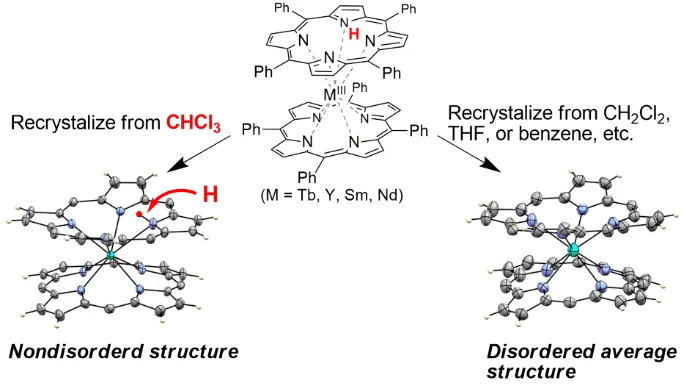
- R. Shahed, K. Yamashita, K. Sugiura*
“Oligomerization of Bis(ethynyl)tetraphenylporphyrin Derivatives by Glaser-Hay Coupling Reaction: Isolation and Characterization of Dimer, Trimer, and Tetramer”
Synthesis, 2016, 48, 2461−2465.
DOI - K. Yamashita, S. Sakamoto, A. Suzuki, K. Sugiura*
“Molecular Design and Syntheses of Tetracyano-5,10-porphyrinquinodimethane Showing Stabilized LUMO”
Chem. Asian J., 2016, 11, 1004−1007.
DOI - K. Yamashita, S. Tazawa, K. Sugiura*
“Oxo(porphyrinato)vanadium(IV) as a Standard for Geoporphyrin”
Inorg. Chim. Acta, 2016, 439, 173−177.
DOI
2015
- K. Hassan, K. Yamashita, K. Hirabayashi, T. Shimizu, K. Nakabayashi, Y. Imai,* T. Matsumoto, A. Yamano, K. Sugiura*
“π-Expanded Axially Chiral Biaryls and Their Emissions: Molecular Design, Syntheses, Optical Resolution, Absolute Configuration, and Circularly Polarized Luminescence of 1,1'-Bipyrene-2,2'-diols”
Chem. Lett., 2015, 44, 1607−1609.
Editor’s Choice DOI Erratum - L. X. Dien, K. Yamashita, K. Sugiura*
“Metal Complexes of π-Expanded Ligands (2): Synthesis and characterizations of bis[2-[(octylimino)methyl]-1-pyrenolato-N,O] palladium(II) and the stabilized vacant dx2-y2 orbital”
Polyhedron, 2015, 102, 69−74.
DOI - R. Shahed, K. Yamashita, Y. Akita, K. Sugiura*
“Stepwise Synthesis of Structurally Well-Defined Porphyrin Wires Connected by Platinum Acetylides”
Chem. Lett., 2015, 44, 1226−1228.
DOI - K. Yamashita, A. Nakamura, M. A. Hossain, K. Hirabayashi, T. Shimizu, K. Sugiura*
“Oxidative Intramolecular C−C Bond Formation Reaction of 1,2-Bis(pyren-2-yl)benzene: Synthesis and Characterization of Benzodinaphthopentaphene”
Bull. Chem. Soc. Jpn., 2015, 88, 1083−1085.
DOI - L. X. Dien, K. Yamashita, M. S. Asano, K. Sugiura*
“Syntheses of a pyrene-based π-expanded ligand and the corresponding platinum(II) complex, bis[2-[(octylimino)methyl]-1-pyrenolato-N,O] platinum(II)”
Inorg. Chim. Acta, 2015, 432, 103−108.
DOI - K. Yamashita,* N. Katsumata, S. Tomita, M. Fuwa, K. Fujimaki, T. Yoda, D. Hirano, K. Sugiura*
“Facile and Practical Synthesis of Platinum(II) Porphyrins under Mild Conditions”
Chem. Lett., 2015, 44, 492−494.
DOI Postprint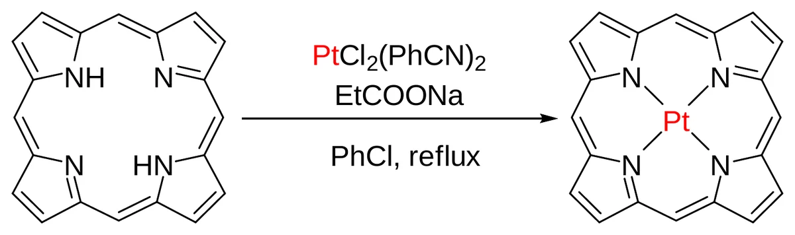
- K. Yamashita, A. Nakamura, K. Sugiura*
“Regioselective Oxidative Oligomerization Reaction of 2-tert-Alkylpyrene and Isolation of Structurally Well-defined 1,3-Pyrenylenes”
Chem. Lett., 2015, 44, 303−305.
DOI
2014
- K. Yamashita,* D. Hirano, M. S. Asano, K. Sugiura,*
“Oxidation of meso-Diarylporphyrins by a Hypervalent Iodine Compound: Facile Synthesis of meso-Acyloxyporphyrins and Dioxoporphodimethenes”
Chem. Lett., 2014, 43, 1049−1051.
DOI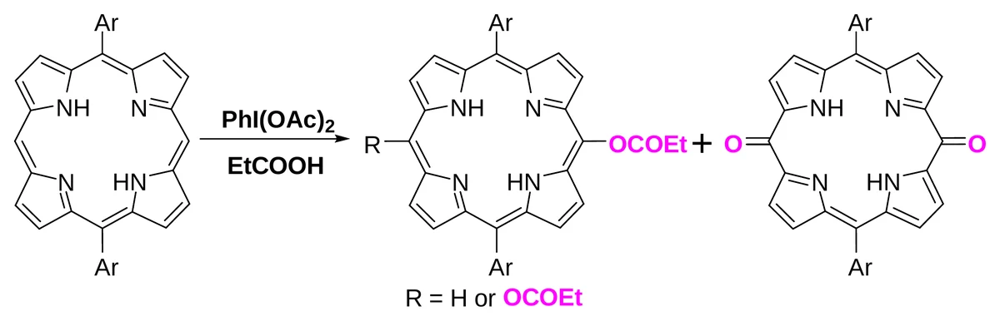
- T. Sagisaka, S. Kurokawa, A. Sakai,* K. Yamashita, M. Taguchi, M. S. Asano, K. Sugiura,
“Conductance of Au/1,4-benzenedicarbothioamide/Au molecular junctions: a proposal for a potential linker”
Chem. Phys. Lett., 2014, 595−596, 167−170.
DOI
2012
- J. Suzuki, A. Sato, R. Yamamoto, T. Asano, T. Shimosato, H. Shima, J. N. Kondo, K. Yamashita, K. Hashimoto, T. Fujino,*
“Matrix-Assisted Laser Desorption Ionization Using Lithium-Substituted Mordenite Surface”
Chem. Phys. Lett., 2012, 546, 159−163.
DOI - K. Yamashita,* K. Kataoka, M. S. Asano, K. Sugiura,*
“Catalyst-Free Aromatic Nucleophilic Substitution of meso-Bromoporphyrins with Azide Anion: Efficient Synthesis and Structural Analyses of meso-Azidoporphyrins”
Org. Lett., 2012, 14, 190−193.
DOI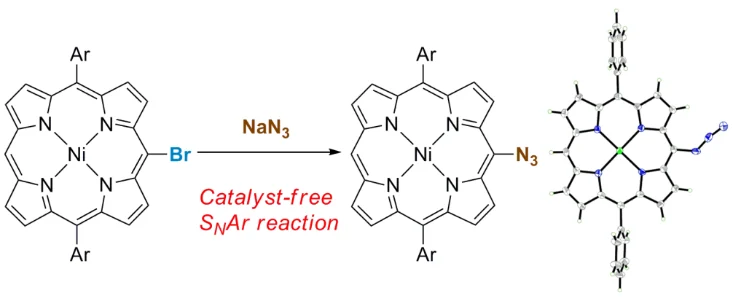
- K. Yamashita, M. Tsuboi, M. S. Asano,* K. Sugiura,*
“Facile Aromatic Finkelstein Iodination (AFI) Reaction in 1,3-Dimethyl-2-imidazolidinone (DMI)”
Synth. Commun., 2012, 42, 170−175.
DOI
2011
- K. Yamashita, K. Kimura, S. Tazawa, M. S. Asano, K. Sugiura,*
“A Forgotten Olefin: A Convenient One-pot Cascade Reaction Involving Suzuki-Miyaura and Mizoroki-Heck Couplings to Form (E)-1,2-Di(pyren-1-yl)ethylene”
Chem. Lett., 2011, 40, 1459−1461.
Paper in celebration for the 2010 Nobel Prize in Chemistry DOI - M. S. Asano,* K. Yamashita, M. Kitabayashi, K. Kusama, D. Kagota, K. Sugiura,*
”Superexchange mediated energy transfer in zinc(II) porphyrin - free base porphyrin dimers: comparison of m- and p-bis(phenylethynyl)phenylene linked dimers”
Phys. Chem. Chem. Phys., 2011, 13, 12712−12715.
DOI
2010
- K. Yamashita, Y. Akita, M. S. Asano, H. Tanaka, T. Kawai, K. Sugiura,*
“A proposal for a new porphine substitution motif aimed at advanced materials: introduction of 4-alkoxy-3,5-diisopropylphenyl groups on porphine”
J. Porphyrin Phthalocyanines, 2010, 14, 1040−1051.
Front Cover DOI - M. S. Asano*, K. Tomiduka, K. Sekizawa, K. Yamashita, K. Sugiura,
“Temperature-Dependent Emission of Copper(I) Phenanthroline Complexes with Bulky Substituents: Estimation of an Energy Gap Between the Singlet and Triplet MLCT States”
Chem. Lett., 2010, 39, 376−379.
DOI
2009
- K. Yamashita, K. Sato, M. Kawano, M. Fujita,*
“Photo-induced self-assembly of Pt(II)-linked rings and cages via the photolabilization of a Pt(II)–py bond”
New J. Chem., 2009, 33, 264−270.
Inner Cover DOI
2007
- K. Yamashita, M. Kawano, M. Fujita,*
“Ru(II)-cornered coordination cage that senses guest inclusion by color change”
Chem. Commun., 2007, 4102−4103.
DOI - K. Yamashita, A. Hori, M. Fujita,*
“Selective Formation of Bis- and Tris[2]catenanes via the Cross-Catenation of Pd(II)- and Pt(II)-linked Coordination Rings”
Tetrahedron, 2007, 63, 8435−8439.
DOI - K. Yamashita, M. Kawano, M. Fujita,*
“Photoswitchable molecular lock. One-way catenation of a Pt(II)-linked coordination ring via the photo-labilization of a Pt(II)–pyridine bond”
J. Am. Chem. Soc., 2007, 129, 1850−1851.
DOI
2005
- A. Hori, T. Sawada, K. Yamashita, M. Fujita,*
“Ultramacrocyclization through reversible catenation”
Angew. Chem. Int. Ed., 2005, 44, 4896−4899.
Highlighted by Science, 2005, 309, 537 DOI
2004
- A. Hori, K. Yamashita, and M. Fujita,*
“Kinetic self-assembly: selective cross-catenation of two sterically differentiated Pd(II)-coordination rings”
Angew. Chem. Int. Ed., 2004, 43, 5016−5019.
DOI - A. Hori, K. Yamashita, T. Kusukawa, A. Akasaka, K. Bradha, M. Fujita,*
“A circular tris[2]catenane from molecular ‘figure-of-eight’”
Chem. Commun., 2004, 1798−1799.
Hot Paper DOI
総説・解説 Reviews
- 山下健一, “剛直な対面型ポルフィリン環状二量体の合成とその特異的ゲスト包接挙動”, 有機結晶部会ニュースレター 2021, 48, 8−9.
- 杉浦健一, 浅野素子, 山下健一, 波田雅彦, “π電子拡張系におけるHartree-Fockの分子対称性の崩れと環状ポルフィリン多量体の電子状態”, 固体物理, 2008, 43, 821−828.